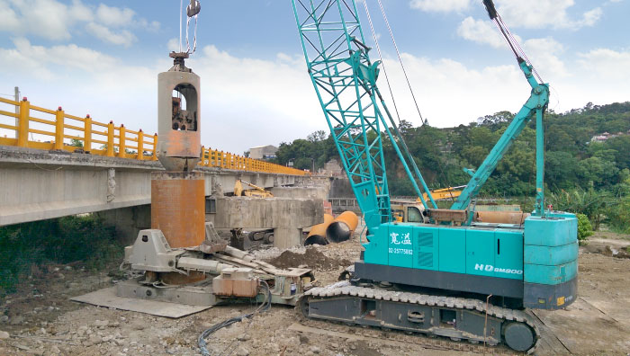

期末實作測試 學號:91135120 姓名:李和珅
基樁工程
套管基樁
基本介紹
全套管基樁是一種深基礎施工技術，使用全套管（鋼套管）在鑽孔的過程中提供孔壁支護，
確保孔壁穩定，防止塌陷和滲水。這種方法特別適用於鬆散土層和含水豐富的地層。
施工步驟
- 定位與放樣：根據設計圖紙進行樁位的放樣和定位，確保樁位準確。
- 設備準備：配置全套管鑽機及相關設備，包括鋼套管、鋼筋籠、混凝土泵等。
- 安裝套管：將鋼套管放置在樁位上，準備開始鑽孔。
- 鑽孔與套管下沉：使用鑽機進行鑽孔，套管隨鑽頭同步下沉，確保孔壁穩定。
根據土層條件和套管長度，逐節接長套管，直到達到設計深度。
- 清孔：鑽孔達到設計深度後，進行清孔，確保孔內無泥沙和其他雜物。
- 鋼筋籠安裝：將預製好的鋼筋籠吊裝入孔內，確保鋼筋籠位置和高度符合設計要求。
- 灌注混凝土：使用導管法或泵送法將混凝土灌注到孔內。
控制灌注速度，避免混凝土分層和孔洞。
- 拔出套管：隨著混凝土灌注，逐步拔出鋼套管，確保混凝土充滿孔洞。
拔管時需要控制速度和力度，避免引起孔壁塌陷或混凝土分離。
- 養護與檢測：混凝土灌注完成後，進行養護，保證混凝土強度的發展。
進行必要的檢測（如聲波檢測或取芯檢測），確保樁的質量。

優缺點
優點：
- 適用範圍廣：特別適用於鬆散土層和高地下水位地區，能有效防止孔壁塌陷和滲水。
- 孔壁穩定：鋼套管提供良好的孔壁支護，確保鑽孔過程中的穩定性。
- 施工質量高：由於套管的支護作用，孔內環境保持較好，灌注混凝土質量容易控制。
缺點：
- 成本較高：鋼套管和專用鑽機設備成本較高，施工成本較其他方法高。
- 施工速度較慢：鑽孔過程中需要逐節接長和拔出套管，施工周期較長。
- 技術要求高：施工過程需要高度的技術和經驗，確保套管下沉和拔出過程的同步。